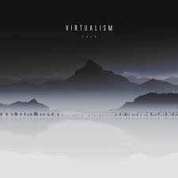
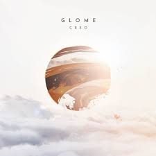

My top 10
These are my 10 favorite Creo tracks, roughly ordered from worst to best.
10. Avalanche
Fun fact: This is the oldest track on this list, being from the 2016 EP “Virtualism”. Despite its noticable age, it's probably the best track from its era. It hits me in the feels with melancholic melodies and its unique composition.

9. Prophecy
This is the most recent work of Creo, Prophecy. It's short and sweet, to say the least. If it was longer it could've maybe placed a bit higher. This track is a great experience. It manages to give me feelings of hopelessness and determination at the same time.

8. Glome
This is the most recent work of Creo, Prophecy. It's short and sweet, to say the least. If it was longer it could've maybe placed a bit higher. This track is a great experience. It manages to give me feelings of hopelessness and determination at the same time.
